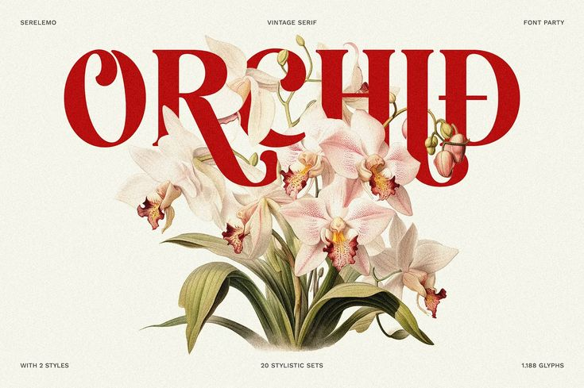

Welcome to the powerpoint presentation of Ashra
PPT design is either absolutely essential or completely irrelevant. It depends entirely on the audience. I'm firmly entrenched in the "absolutely essential " camp, but I've been dragged kicking and screaming over to the "completely irrelevant" camp more times that I'd like to remember. The world kept spinning and the sun rose the next day, with or without great design, so to me, it's all about the content and the presenter.
Design is critical. However, so is passion and creativity. I would encourage your students to take chances and to try to be creative. It doesn't matter if their designs for class are great - but encourage them to have fun and to experiment. If they walk out of your class feeling empowered and that creating presentations is fun, it's a win.
Just me, myself and I, exploring the world of powerpoint presentations. I have a heart of love and a interest in the world of design, I want to share my world with you. In recent projects, I have learned that design plays a crucial role in making content engaging and effective, as it helps convey ideas clearly and capture the audience's attention. Additionally, I have realized that creativity and attention to detail are essential in crafting designs that not only look good but also serve their intended purpose.
Design Art Canvas Gallery Color DIY Ideas Scheme Abstract Layout Illustration Aesthetic Drawing Contrast
Lets get in touch and talk about your next project.